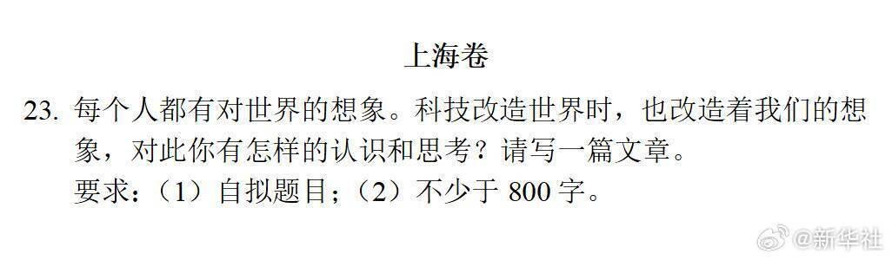
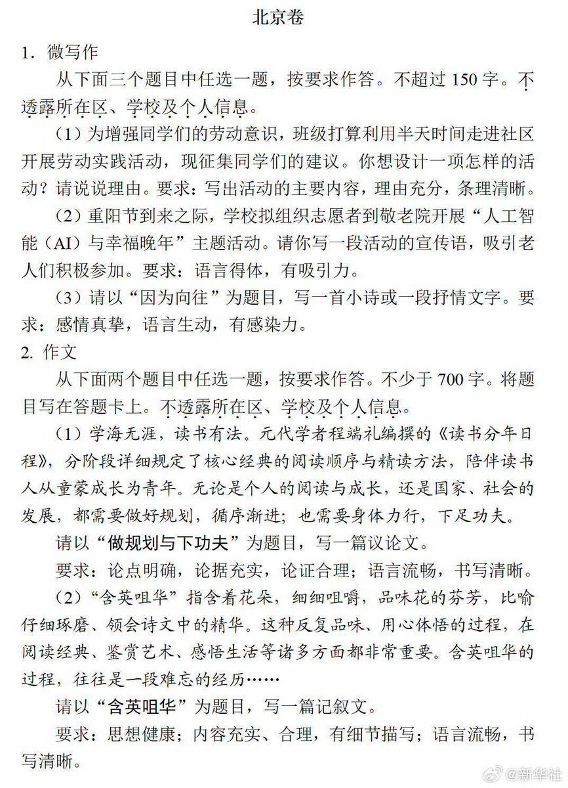

サイバー環状線
@CyberKanjousen
科技不断重塑着我们对世界的想象，可我渐渐明白，无论世界如何变化，真正支撑着我、让我对未来始终怀有温柔想象的，从来都不是冰冷的技术，而是藏在烟火气里的爱与守护。
那是一个大雨倾盆的夜晚，我发烧了......
（4/5）


サイバー環状線
@CyberKanjousen
程端礼在《读书分年日程》里，写下了循序渐进的成长规划。可我慢慢发现，比起那些写在纸上的计划，更深刻的成长，是有人为了我，默默扛下所有风雨，在细碎日常里为我铺好前行的路。
那是一个大雨倾盆的夜晚，我发烧了，妈妈背着我.....
（3/5） https://t.co/49B5voe8Vz